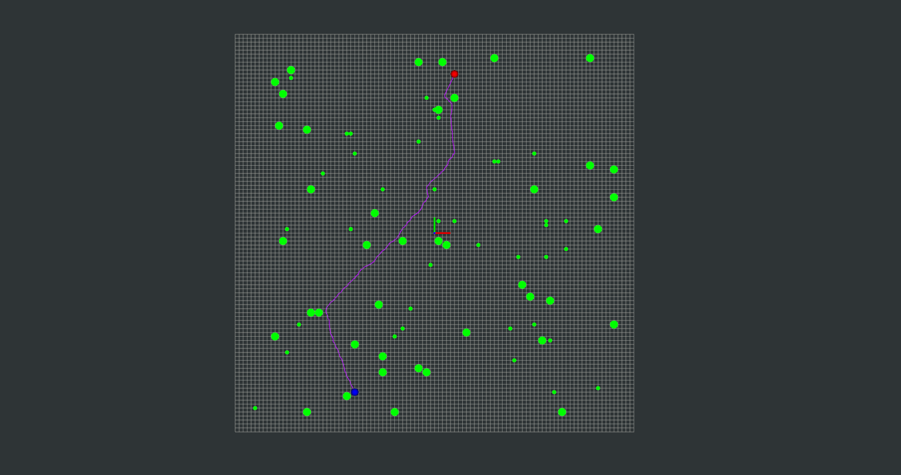
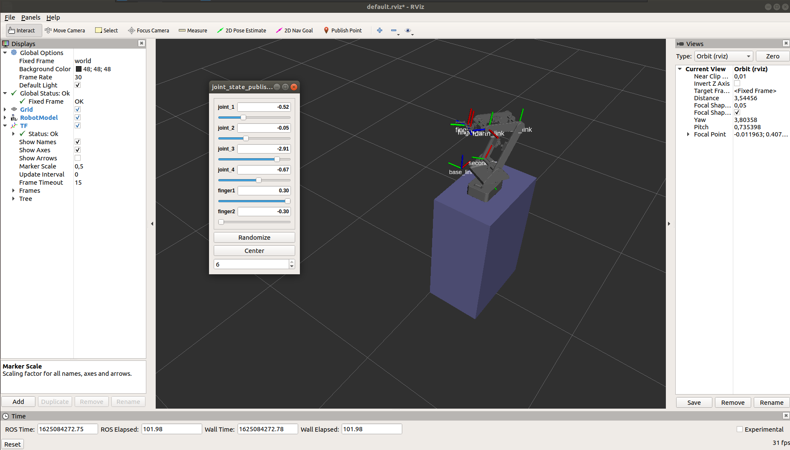

Ali Aydın KÜÇÜKÇÖLLÜ
Autonomous Driving Software Engineer
Welcome to my page! I'm a passionate Mechatronics Engineer with experience in robotics and autunomous driving. I love building innovative solutions and sharing my knowledge through technical writing. Explore my projects and blog posts to learn more about my work and interests.
Projects

